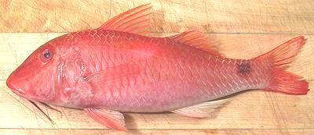

Indian Goatfish / Red Mullet

[Yellow Spot Goatfish, Parupeneus indicus]
This tropical Indo/Pacific Goatfish is found from the east coast of Africa to the southwest coast of Mexico and as far south as the northern coast of Australia. It adopts a number of color schemes but is often marketed in its red form as "Red Mullet". All have the round dark spot at the tail and a large yellow spot at the lateral line between the two dorsal fins - but in the red form that spot is only faintly visible.
Be aware that this is not the "Red Mullet" called for in European recipes. Those fish, the European Red Mullets are related but usually sold smaller, between 2-1/2 and 8 ounces.
This is a superb eating fish, but not common here in Southern California. They can grow to nearly 18 inches but fish in my test batch were about 12-1/2 inches long weighing 1 pound. The photo specimen is a bit smaller because the idiots at the market had broken the tails of all the larger fish to fit them in a foam tray that was too small - an outrage that would never happen in the Philippine and Southeast Asian markets here. Red list status: Not Evaluated. Photo © cg1.
More on Goatfish.
General: Indian Goatfish is a very fine eating fish with mild, firm white flesh suitable for most method of cooking. It easily breaks up into large flakes on the plate.
Cooking: I don't recommend cooking this whole, because the many large centerline spines, other small bones associated with the fins, and difficulty making sure all the transparent scales have been removed make it difficult to eat. Fillets are easily made bone and scale free. Also the skin shrinks quite a bit which is not desirable in a fish steamed or baked whole. On the other hand, skinless fillets poach very nicely and pan fry even better. Just dust lightly with rice flour and fry in pure olive oil.
Cleaning: This fish is covered with very large but rather thin scales that take moderate energy to scrape off. Some will simply fold over, but are easy to pull off with your fingers. The fish is easy to clean but the throat is so strong you'll have to cut it with shears. The gills pull out fairly easily.
Fillets: This is an easy fish to fillet but the short rib cage is difficult to follow. When you get to the rib cage just use your shears to cut the ribs from the backbone and use long nose pliers to pull them from the fillet. There are also many very significant centerline spines which need to be pulled for the front half of the fillet. Pull forward with long nose pliers.
Fillet yield is moderate due to the fish's large head, a 1 pound fish yielding about 7-1/8 oz of skinless fillet (45%).
Skin: The skin of this fish does not have a strong or "off" flavor but it does shrink quite a bit when cooking so is best removed. The skin is thin but tough so it's easy to remove by the long knife and cutting board technique.
Stock: The head fins and bones make a light flavorful stock with very little oil, one of the finest and most usable fish stocks you can have.
sf_mullrdz 090828 - www.clovegarden.com